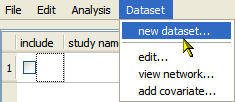
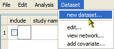

- Binary or continuous
- Diagnostic

In this example, the data type is binary. See Data Sets for description of the data types available in Open Meta-Analyst.

To create a new data set in the main Open Meta-Analyst window, do the following steps.

In this example, the data type is binary. See Data Sets for description of the data types available in Open Meta-Analyst.
This opens the Open Meta-Analyst window. For binary data, the window appears as shown below.

The next section shows how to enter data in the data set.
Note: You can also create a new data set in the Welcome to Open Meta-Analyst dialog by clicking the create new button and following steps similar the procedure above.
 | Example - Binary Data | Entering and Saving Data |  |